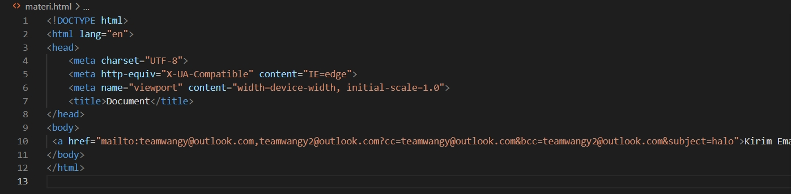
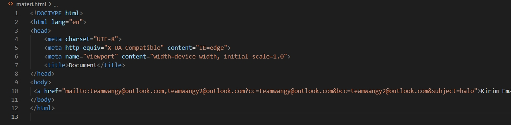

Struktur HTML merupakan gambaran dari tampilan dalam sebuah web.
Struktur ini digunakan untuk mengatur semua elemen yang akan muncul pada browser.
Dalam sebuah elemen html, diperlukan tag pembuka dan tag penutup agar elemen tersebut dapat
dimengerti oleh komputer dan muncul pada browser.
Berikut merupakan gambar struktur HTML.

Dari gambar struktur HTML diatas, kita mengetahui terdapat bagian DOCTYPE, lalu bagian head, dan bagian body.
Tapi fungsi dari bagian-bagian itu apa saja ?
Untuk mempercepat pembuatan struktur HTML, kita dapat mengetikan tanda seru ("!") memencet tab/enter sehingga struktur HTML pun akan jadi secara otomatis dan secara cepat.
Tag br berfungsi untuk memberikan jarak/enter antar elemen pada HTML.
Tag ini tidak memiliki tag penutup sehingga tag br dapat langsung digunakan.
Mari kita lihat gambar contoh dibawah.
Jika kita tidak menggunakan tag br maka hasil yang akan kita dapatkan akan seperti gambar dibawah

Tetapi jika kita menggunakan tag br maka hasil yang akan kita dapatkan akan seperti gambar dibawah
Semakin banyak tag br yang kita gunakan maka semakin besar pula jarak/enter pada sebuah kalimat dengan kalimat lainnya.
Hal tersebut dapat kita lihat dari gambar dibawah.

⚠ Tag br dapat digunakan layaknya enter pada keyboard kita tetapi gunakan tag br pada posisi yang tepat agar enter pada file HTML kita sesuai dengan keinginan kita.
Atribut dan value merupakan sebuah elemen yang diperlukan pada elemen HTML.

Pada gambar diatas, kita dapat melihat bahwa tag body menggunakan atribut background colour (bgcolor) dengan value green atau #00ff00 sehingga hasil dari penggunaan atribut dan value tersebut dapat terlihat pada gambar 6
⚠ Saat kita menggunakan Value maka kita harus menggunakan tanda kutip pada awal dan akhir kalimat agar komputer dapat menerima perintah tersebut. Selain itu juga, Atribut dan Value hanya dapat menerima input dalam Bahasa Inggris saja sehingga Bahasa lain tidak dapat digunakan pada teks editor.
Tag catatan merupakan tag yang berfungsi untuk menuliskan keterangan pada sebuah elemen HTML.
Tag ini hanya dapat dilihat pada text editor sehingga saat kita melihat di browser, tulisan yang kita ketik
tidak akan muncul dan hanya elemen HTML saja yang ada pada browser.
Contoh penggunaan tag catatan dapat dilihat dibawah

Gambar diatas merupakan contoh penggunaan teks dimana tulisan "Tulisan ini dibuat oleh Kelompok Wangy" muncul dan hanya tulisan " Hello World" saja yang muncul.
⚠ Untuk membuat catatan kita HARUS menggunakan <!-- --> agar tulisan dikategorikan sebagai comment
Tag catatan merupakan tag yang berfungsi untuk menuliskan keterangan pada sebuah elemen HTML.
Tag ini hanya dapat dilihat pada text editor sehingga saat kita melihat di browser, tulisan yang kita tulis
tidak akan muncul dan hanya elemen HTML saja yang ada pada browser.
Contoh penggunaan tag heading dapat dilihat dibawah


Gambar diatas merupakan macam-macam heading yang ada pada HTML dan penulisan heading ini menggunakan atribut align dengan value center agar posisi tulisan berada ditengah tetapi terdapat atribut align lainnya yang dapat membuat posisi teks ditempat yang berbeda
⚠ Semakin besar tulisan maka semakin kecil angka yang ada pada tag heading
Tag paragraph merupakan tag yang digunakan saat kita menuliskan beberapa kalimat yang membentuk sebuah paragraph.
Kita juga dapat menggunakan tag br untuk menambahkan jarak antar paragraph.
Contoh penggunaan tag paragraph dapat dilihat dibawah


Gambar diatas merupakan contoh penggunaan tag paragraph yang dapat ditulis di HTML. Penulisan paragraph pada contoh diatas menggunakan atribut align dengan value center agar posisi paragraph berada ditengah tetapi terdapat align lainnya yang membuat posisi teks ditempat yang berbeda
Tag hr berfungsi untuk memberikan garis/ pemisah pada suatu bagian dengan bagian lainnya.
Tag ini seperti tag br karena tag ini tidak memiliki tag penutup.
Contoh penggunaan tag hr dapat dilihat dibawah
Gambar diatas merupakan contoh penggunaan tag hr di HTML. Penggunaan tag hr diatas menggunakan atribut align dengan value center agar posisi ditengah, lalu menggunakan atribut size dengan value 30px agar ukuran hr menjadi lebih besar, dan menggunakan atribut color dengan value black agar warna menjadi hitam.
⚠ Posisi dan besar kecil hr harus diperhatikan agar hr sesuai dengan kemauan kita
Text Formatting digunakan untuk memberikan penegasan pada sebuah kalimat dalam elemen HTML.
Text formatting yang ada pada HTML yaitu :
Tag ini merupakan tag yang digunakan untuk menampilkan karakter yang tidak ada pada keyboard
Special Character yang ada pada HTML cukup banyak dan dapat kita gunakan sesuai dengan kemauan kita. Berikut merupakan contoh dari beberapa special character yang ada di HTML.

Tag a merupakan sebuah tag yang berfungsi sebagai hyperlink atau dengan kata lain, tag a merupakan tag yang memungkinkan
kita untuk berpindah secara otomatis dari suatu bagian/suatu halaman website ke bagian/halaman website lainnya.
Untuk memperlihatkan tag a di HTMl, kita dapat menggunakan text sebagai wadah untuk menampung link yang ada pada tag a.
Tag a memiliki atribut yaitu href. Dalam HTML, terdapat beberapa value untuk href. Value tersebut yaitu:
Dari gambar diatas, kita dapat mengetahui bahwa url yang digunakan adalah url relatif dan saat url kita sentuh maka, text akan berpindah ke halaman website lainnya. Jika kita menggunakan tag a yang sama pada website lain, kita juga dapat kembali ke website awal kita.
Dari gambar diatas, kita dapat mengetahui bahwa url yang digunakan adalah url absolut dan saat link kita click maka browser akan mengarahkan kita ke halaman youtube dan untuk kembali ke halaman website, kita dapat berpindah tab.
Saat kita menggunakan atribut href pada tag a, kita dapat menggunakan alamat email sebagai valuenya tetapi dalam value
tersebut harus ditambahkan “mailto: ” agar komputer dapat mengerti bahwa kita ingin mengirmkan email ke alamat email
tersebut dan komputer dapat memprosesnya.
Mari kita lihat gambar dibawah


Jika dilihat dari gambar diatas, saat kita menggunakan value alamat email, komputer menerima informasi bahwa kita ingin mengirimkan email ke alamat email tersebut sehingga saat kita mengklik email tersebut maka komputer langsung mengarahkan kita ke pembuatan email dengan alamat email tersebut. Selain itu juga, kita dapat mengirimkan email ke lebih dari 1 penerima dengan menggunakan tanda koma (,).

Untuk menuliskan email untuk CC atau BCC secara otomatis, kita dapat menuliskan tanda tanya (?) setelah alamat email yang
telah kita ketik pada href. Untuk email CC, kita dapat mengetikan CC kemudian gunakan tanda sama dengan (=) lalu alamat
email yang akan menerima CC. Setelah itu, kita ketikan tanda dan (&) agar komputer dapat mengerti dan berlanjut ke alamat
email untuk BCC. Untuk email BCC, kita dapat mengetikan BCC kemudian gunakan tanda sama dengan (=) lalu alamat email yang akan
menerima BCC.
Untuk contoh penulisan email secara cc atau bcc secara otomatis dapat dilihat pada gambar dibawah.

Untuk menuliskan subject dan email secara otomatis , kita dapat menggunakan tanda dan (&) setelah menuliskan email CC dan BCC tetapi jika kita tidak menggunakan email CC/BCC, kita dapat menggunakan tanda tanya (?) terlebih dahulu. Untuk membuat subject email, kita dapat ketikan kata subject kemudian gunakan tanda sama dengan (=) lalu ketikan subject dari email kita. Untuk contoh penulisan body email secara otomatis, ada pada gambar dibawah.
 

Untuk membuat body email/ isi dari email, kita dapat menggunakan tanda dan (&) lalu masukan kutip dua (" ") lalu ketikan kata body lalu gunakan tanda sama dengan (=) kemudian ketikkan isi email kita apa. Untuk contoh penulisan body email secara otomatis, ada pada gambar dibawah.
Tanda dan (&) dapat digunakan sebagai penyambung antar bagian satu dengan yang lainnya dan pembatas antar bagian sehingga saat komputer membaca perintah yang kita tulis, komputer tidak bingung dan dapat menjalankan perintah tersebut.
Selain digunakan untuk berpindah halaman dan membuat email secara otomatis, href juga dapat digunakan untuk berpindah pada
suatu bagian ke suatu bagian lainnya.
Untuk membuat href pindah ke suatu bagian pada halaman web yang sama, kita harus membuat id pada
bagian yang akan kita tuju sehingga halaman seperti sudah ditandai.
Setelah membuat id, kita dapat membuat tag a dengan atribut href tetapi untuk value dari href kita menuliskannya dengan tanda hashtag/pagar(#) kemudian kita ketikan id dari bagian yang sudah kita tandai pada value href tersebut sehingga saat link diklik maka browser akan memindahkan kita ke bagian yang telah kita tandai. Kita hanya dapat menggunakan intra page links jika bagian tersebut memiliki id sehingga saat tag a digunakan, tag a dapat memerintahkan browser untuk pergi kemana dengan tepat.
Tag img berfungsi untuk menampilkan gambar pada halaman website kita.
Untuk menggunakan tag img kita dapat menuliskan tag img lalu masukan atribut src. Atribut src merupakan atribut
yang digunakan untuk mengambil gambar dari file ataupun url. Untuk value dari atribut src merupakan path dari gambar
yang kita miliki ataupun url sebuah gambar.
Mari kita lihat contoh gambar dibawah
Gambar diatas merupakan penggunaan tag img dengan value src path dari sebuah gambar.
Gambar diatas merupakan penggunaan tag img dengan value src url sebuah gambar
Terdapat beberapa atribut yang dapat digunakan pada tag img. Atribut-atribut tersebut adalah
Selain atribut, kita juga dapat menggunakan tag a untuk membuat gambar saat di klik berpindah ke alamat url yang telah ditentukan.
Image maping berfungsi untuk membuat suatu area pada gambar melakukan suatu hal.
Untuk melakukan image maping, kita dapat menentukan area yang akan dilakukan image maping. Setelah itu, masukan gambar kedalam
code editor menggunakan tag img. Setelah gambar dimasukan, masukan tag map kemudian ketikan atribut name lalu isi atribut dengan
value sesuai dengan nama gambar/keinginan kita. Atribut name digunakan untuk menspesifikasi nama sebuah elemen HTML.
Setelah itu, masukan atribut usemap dibelakang value src dan ketikan tanda hastag/pagar(#) lalu ketikan value dari atribut
name di value usemap. Setelah itu, dalam tag map, masukan tag area dengan atribut shape dan value yaitu bentuk sesuai
dengan kemauan kita. Setelah itu, masukan koordinat dari batas awal gambar hingga batas akhir gambar. Sesudah itu, masukan
atribut alt dengan value sesuai dengan kemauan kita agar saat gamabr tidak muncul ada informasi tambahan mengenai gambar
tersebut. Jika kita ingin menghubungkan bagian yang telah kita tentukan dengan halaman web lain, kita dapat menggunakan href.
Untuk Contoh Image maping dapat dilihat pada gambar dibawah
Iframe merupakan komponen dari file HTML yang memungkinkan Anda menyematkan video, dokumen, dan file lainnya ke dalam sebuah halaman website.
Untuk membuat iframe, kita dapat menggunakan tag iframe dan gunakan width, height untuk memperbesar iframe serta gunakan
border sebagai pembatas untuk iframe.
Jika kita ingin merubah-rubah iframe yang kita miliki, kita dapat menggunakan atribut name pada tag iframe karena atribut
name merupakan atribut yang mirip seperti id sehingga jika kita mengklik tag a yang ada maka I frame akan berubah mengikuti
tag.
Dibawah ini merupakan contoh dari iframe.
| Materi HTML dasar lain dapat dipelajari | |||
| Materi 1 | Materi 2 | Materi 3 | Materi 4 |